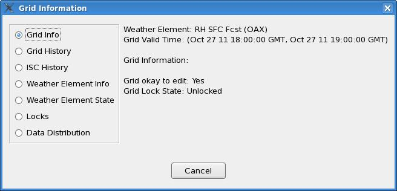
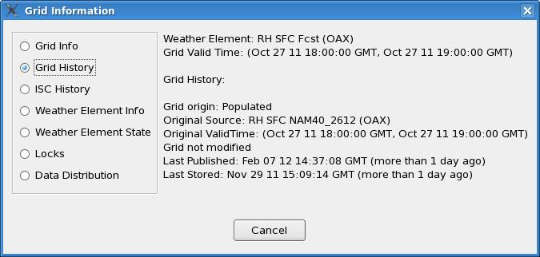
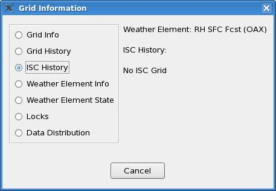
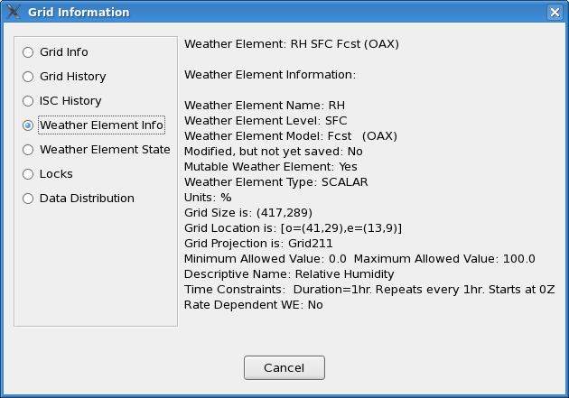
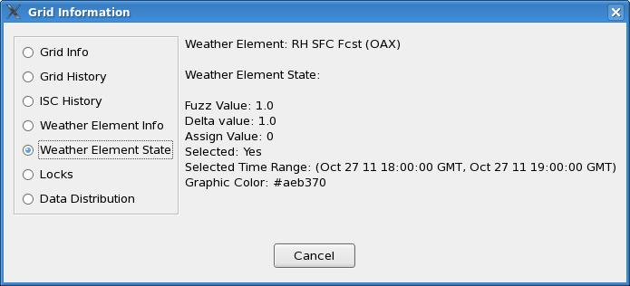
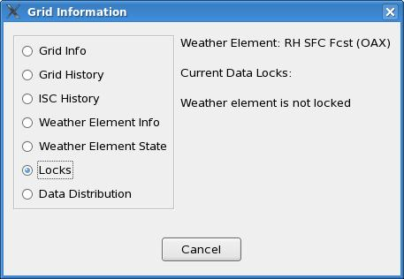
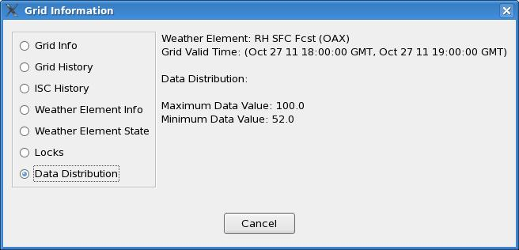

The dialog is divided into different sections as shown in the following
table:
| Section | Contents | Dialog Example |
| Grid Info | Shows the grid valid time, whether it is okay to edit this grid or now, and the current lock state for this grid. |  |
| Grid History | Shows the origin of the grid (Calculated, Populated, Interpolated, Created From Scratch, Other), the original source and valid time of the grid (which will be different from the current weather element and valid time if it was copied/moved or time shifted), whether or not the grid was time shifted, the last time the grid was modified by a user and who modified it. The "Last Stored" time indicates when this grid was stored into EDEX. The "Last Published" time indicates when this grid was published to the official database. |  |
| ISC Grid History | When an ISC grid exists, shows the site identifier and the time the grid was last updated. The history information from each of the ISC sites that make up the ISC grid is also shown. |  |
| Weather Element Information | Describes the weather element. Displays the name, model, whether or not it is modified by not saved, whether or not it is mutable, the weather element type, units, grid size, location, and projection, the maximum and minimum allowed values, time constraints, and the descriptive name. |  |
| Weather Element Edit States | Describes particular attributes associated with editing of this weather element. Displays the fuzz value, discrepancy value, delta value, pick up value, whether the weather element is selected and its selection time range, and the graphical color for this weather element. |  |
| Locks | Displays the current set of locks for this weather element. The locks show the time range for the period(s) locked, and who owns the lock. |  |
| Data Distribution | This dialog shows the data distribution for the grid. For scalar and vector it shows the minimum and maximum values. For weather, it shows the number of gridpoints with each type of weather. |  |